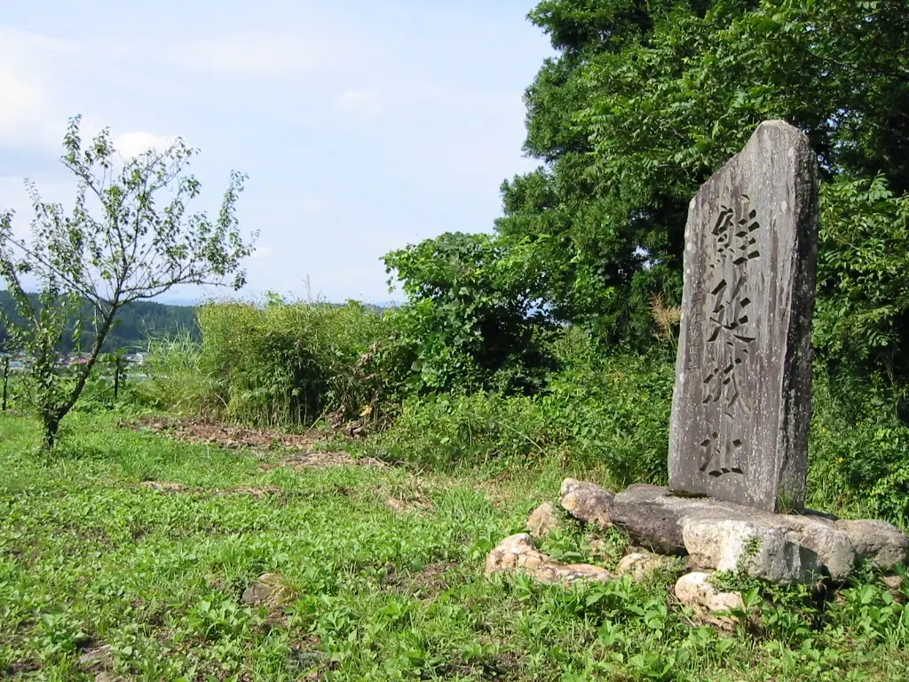
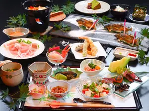
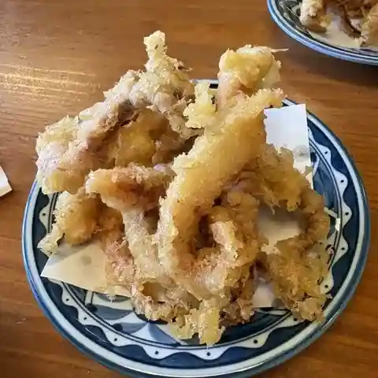
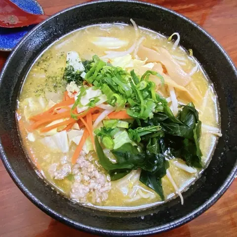
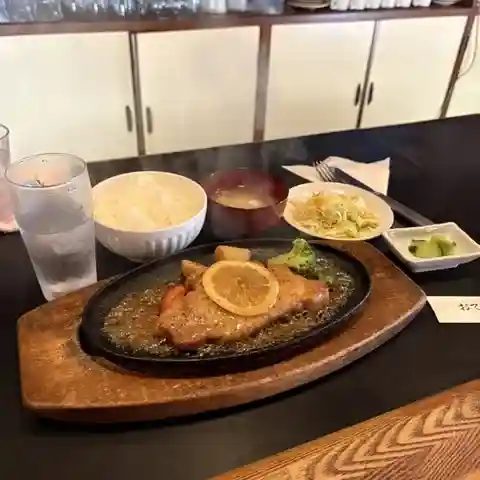
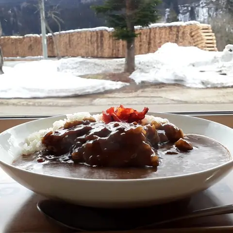
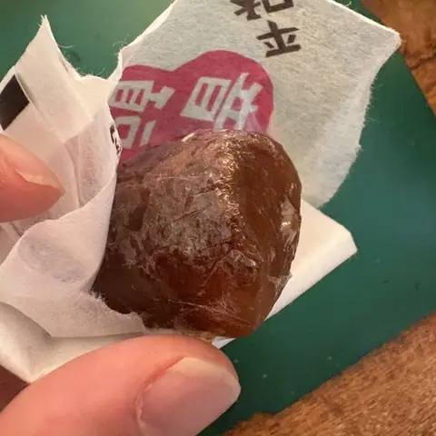
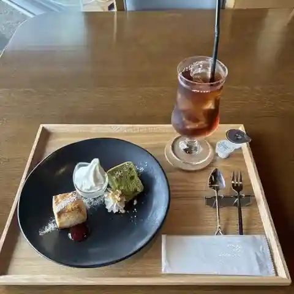
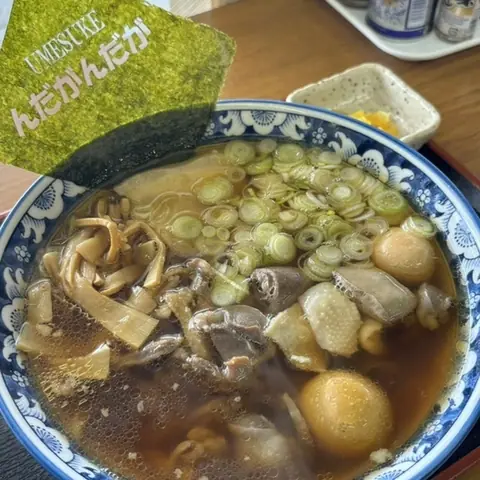

Mamurogawa
Mamurogawa · Yamagata
Mamurogawa
Highlighted on the Yamagata map.

Stay
まむろ川温泉梅里苑

Mamuro Kawa Onsen Umezato En
Onsen lodging in Mamurogawa, Yamagata.
Dining
そば屋重次郎

Soba Ya Shigejirou
Soba restaurant in Mamurogawa, Yamagata.
梅の里ラーメン 大吉

Ume No Sato Raamen Daikichi
Ramen shop in Mamurogawa, Yamagata.
リンダ 俵

Rinda Tawara
Yoshoku (Western-style) restaurant in Mamurogawa, Yamagata.
マルエスダイニング

Maruesudainingu
Local diner in Mamurogawa, Yamagata.
平和堂菓子舗

Heiwa Dou Kashi Ho
Cake shop in Mamurogawa, Yamagata.
梅Cafe

Ume Cafe
Café in Mamurogawa, Yamagata.
一楽食堂
Ichi Rakushoku Dou
Shokudo diner in Mamurogawa, Yamagata.
麺屋 うめ助

Men Ya Ume Jo
Ramen shop in Mamurogawa, Yamagata.
うどんとごはん処 ながの
Udontogohan Tokoro Nagano
Udon restaurant in Mamurogawa, Yamagata.
プッシュアップ66
Pusshuappu 66
Coffee shop in Mamurogawa, Yamagata.
なかがわ
Nakagawa
Soba restaurant in Mamurogawa, Yamagata.
マルシメ食堂
Marushime Shokudou
Shokudo diner in Mamurogawa, Yamagata.
麺屋 うめ助 2号店
Men Ya Ume Jo 2 Gou Mise
Ramen shop in Mamurogawa, Yamagata.
あじまん本舗 郷野目ストア真室川店
Ajiman Honpo Gouno Me Sutoa Mamurogawa Mise
Taiyaki shop in Mamurogawa, Yamagata.
五十嵐商店
Igarashi Shouten
Deli in Mamurogawa, Yamagata.
菓子処 亀甲屋
Kashi Tokoro Kikkou Ya
Japanese sweets shop in Mamurogawa, Yamagata.
マックスバリュ 真室川店
Makkusubaryu Mamurogawa Mise
Convenience store in Mamurogawa, Yamagata.